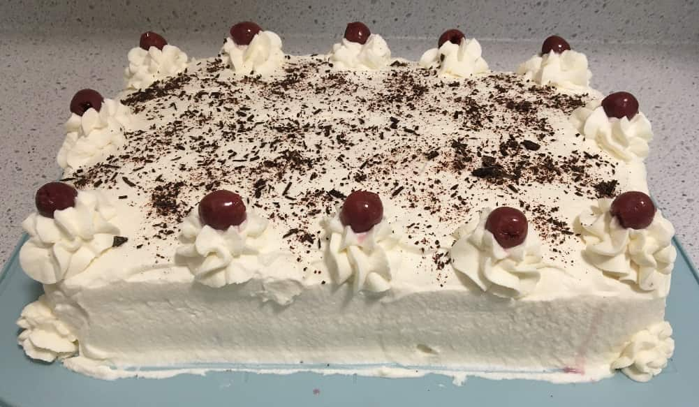

Usually, black forest cakes are round and tall - I made this recipe for a 13X9 pan in an attempt to make it short enough to fit in my cake carrier (it didn't). If adjusting to make a round cake, you will likely get more layers out of it (multiplying by \(\frac{3}{4}\) should get you a 4 layer 8" cake (split each of 2 cakes to make 4 layers).
This recipe is for a traditional black forest cake - it will taste nothing like the sweet cakes you are likely to find in a north american grocery store. This cake is not nearly as sweet, and has a strong cherry flavour provided in part by a difficult-to-find cherry brandy called kirsch/kirschwasser (cherry liquor cannot be substituted here, which is far sweeter: cherry juice would be a better - although suboptimal - substitute). The key to this cake is to make a chocolate sponge cake which is not too sweet, sturdy, and somewhat on the dry side so that it can absorb the kirsch syrup, from which it obtains its moistness. This cake obtains its leavening primarily from eggs in the traditional cake, and does not contain butter or oil.
Ingredients:
8 eggs
\(1\frac{1}{3}\) cups cake flour
\(\frac{1}{2}\) cups cocoa powder
2 tsp baking powder
\(2\frac{1}{2}\) cups sugar
\(\frac{1}{4}\) tsp salt
1 tsp vanilla extract
28 oz jar sour pitted cherries (you may want a bit more)
5 tbsp corn starch
9 tbsp kirschwasser
4 cups whipping cream
\(\frac{1}{2}\) cup icing sugar
1 tbsp vanilla extract
Dark chocolate
Instructions:
Line 2 13X9 pans with parchment paper, and do not butter (this is key to making a sponge cake, so it doesn't pull away from the sides).
Combine flour, cocoa powder, baking powder, and salt.
Separate the eggs. Whisk egg whites and \(\frac{3}{4}\) cups sugar to soft peaks. Separately whisk egg yolks and \(\frac{3}{4}\) cups sugar for 3-5 minutes until pale yellow.
Fold egg yolk mixture into egg whites, and then fold together with dry ingredients (delicately, so that egg whites do not deflate, but just until the flour is fully incorporated and the mixture is homogeneous - do not overmix).
Split batter between pants and cook about 30 minutes at 350F.
Place cakes on a cooling rack (run a knife between the cake and the edges of the pan to detach). Once cool, level the cakes (if you place a flower nail in the centre of the cake batter before baking, it should already be pretty flat, but you want to level it anyways to fully expose the absorbent cake below the crust the forms on top after baking).
Reserve \(\frac{3}{8}\) cup cherry juice from the jar for the kirsch syrup (strain the cherries), and 16 of the nicest looking cherries for garnish.
Combine \(\frac{1}{4}\) cup sugar, 5 tbsp corn starch, and remaining cherry juice (this is why you may have wanted to get another jar of cherries: there's a bit of a shortage of juice if you need more of the syrup), bring to a boil, cook until it starts to thicken, stir in non-reserved cherries, simmer until thick, then remove from heat.
Stir in 3 tbsp kirsch, let cool.
To make the cherry/kirsch syrup, combine \(\frac{3}{4}\) cup sugar, \(\frac{3}{8}\) cup water \(\frac{3}{8}\) cup cherry juice, simmer about 5 minutes (we don't want it to fully thicken, in which case we won't have enough to soak the cakes, but do want to reduce it slightly). Let cool, then stir in \(\frac{3}{8}\) cup kirsch. Drizzle on both levelled cake layers. You may need to make more of the syrup (or use less) depending on how much you think the cakes can hold - this is why you may want another jar of cherries, so you still have juice to make the cherry filling.
Layer soaked sponge cake, then cherry mixture, then whipped cream to within about an inch of the edge of the first layer so that when the second layer is placed it spreads naturally (whip whipping cream, icing sugar, and 1 tbsp vanilla extract to stiff peaks to make whipped cream), and repeat (this makes a 2 layer cake). You should have enough whipped cream to fully seal the cake on top and sides - do so carefully so that you don't accidentally mix some of the cherry mixture into the outer layer of whipped cream.
IF you've been conservative with the whipped cream, you should have enough to pipe some flowers around the cake's perimeter, and place reserved cherries in the center of each flower. Finally, sprinkle top of cake with shaved dark chocolate (I'm lazy - it would look better if you actually made chocolate curls, which are a bit more work).
The cake is best if you've let it sit in the fridge for a few hours to allow the kirsch syrup to fully soak into the cake layers.